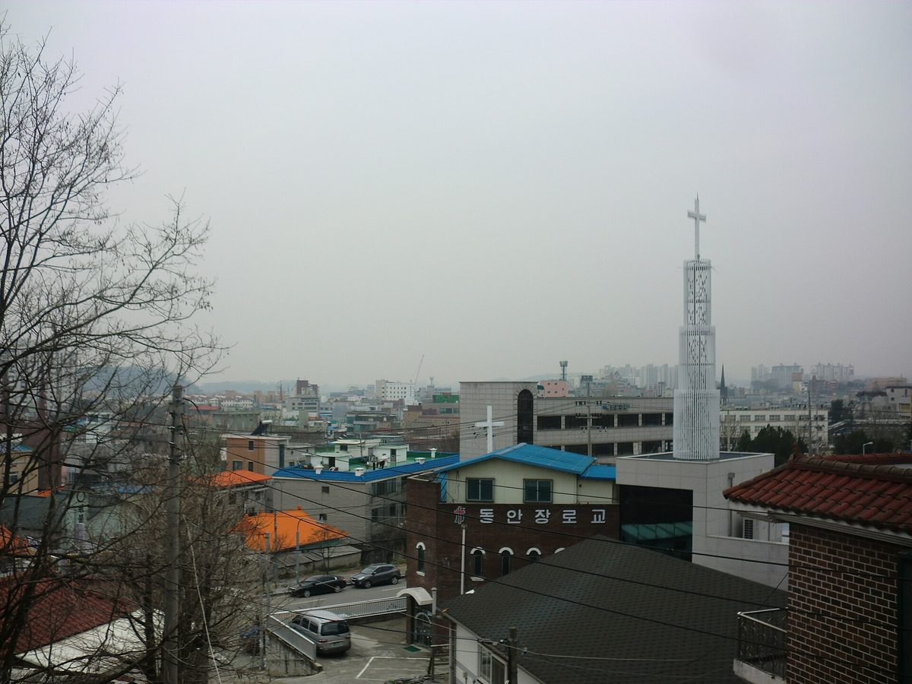

경기도 적극행정 최우수로 뽑힌 안성 금석천 RE100공원, 6개월 뒤 사업 접어…19억5,000만 원 계획에 토지 매입비 약 40억 원 빠져

폐천부지 점용 전제로 짰지만 땅이 용도폐지돼 무상 사용 막혀…시의회 답변선 4필지 중 3필지가 2023년 용도폐지, 6,300만 원 설계용역은 중도 종료
경기도가 적극행정 최우수 사례로 꼽은 폐천부지 RE100공원 사업 가운데 안성 금석천 공원이 땅을 살 돈이 따로 필요하다는 사실이 드러나 지난해 11월 일몰된 것으로 안성시의회 회의록에서 확인됐다. 안성시는 2024년 10월 도 공모에 뽑힌 뒤 옥산동 일원 1만3,580㎡에 도비 5억 원과 시비 14억5,000만 원, 모두 19억5,000만 원을 들여 태양광과 재생에너지 학습장 등을 갖춘 수변공원을 2025년 12월까지 짓겠다고 밝혔지만, 폐천부지를 점용해 쓰려던 땅이 용도폐지돼 한국자산관리공사 관리로 넘어가면서 무상 사용이 막혔다. 추가로 필요한 토지 매입비는 약 40억 원으로 당초 사업비의 두 배가 넘었고, 2024년 11월 6,300만 원에 맡긴 실시설계용역도 중도에 끝내고 정산하기로 했다. 시의회 답변에 따르면 사업 부지 4필지 가운데 3필지는 2023년 국유재산 총조사 때 직권 용도폐지됐고 나머지 1필지도 2024년 중반 용도폐지돼, 이 기록이 맞다면 공모 선정 전에 이미 땅의 처지가 달라져 있었던 셈이어서 공모 심사에서 토지 사용 가능성을 제대로 따졌는지 의문이 제기된다. 경기도는 2025년 5월 이 사업을 상반기 적극행정 최우수 사례로 뽑으면서 전문가 자문단 운영과 시군 공모사업 추진 등 체계적인 노력을 이유로 들었고, 안성시는 한국자산관리공사와 무상 사용을 협의했으나 받아들여지지 않아 공사비보다 큰 토지보상비 때문에 경제성과 실효성이 부족해 사업을 끝냈다고 시의회에 설명했다. 경기도와 안성시가 용도폐지 사실을 알고도 사업을 밀어붙였다는 근거는 확인되지 않았다.
시민에너지 관점
19억5,000만 원짜리 계획이 약 40억 원의 땅값 앞에서 멈췄고, 그사이 6,300만 원짜리 설계와 최우수 표창이 먼저 지나갔다. 공공부지 재생에너지가 늦어지는 이유로 흔히 주민 반대를 꼽지만, 이번에는 땅을 누가 어떤 권리로 쓸 수 있는지라는 첫 질문이 비어 있었다. 공공부지 발전소는 시민과 지역이 오래 주인으로 머무는 자산이 돼야 하는 만큼, 땅의 소유·점용 관계를 먼저 굳혀야 그 위에 주민 출자도, 수익 공유도 설계할 수 있다. 경기도는 남은 폐천부지 공원 사업의 부지 사용권부터 공개 점검하고, 공모 심사에 토지 확보 검증을 필수 항목으로 넣어야 한다.
출처: OBC뉴스 2026-10-29 김승환 기자 원문 보기
京畿道の積極行政最優秀に選ばれた安城クムソクチョンRE100公園、6カ月後に事業中止…19億5,000万ウォンの計画に土地購入費約40億ウォンが抜けていた
廃川敷地の占用を前提に計画したが土地が用途廃止され無償使用できず…市議会答弁では4筆のうち3筆が2023年に用途廃止、6,300万ウォンの設計業務は途中終了
京畿道が積極行政の最優秀事例に選んだ廃川敷地RE100公園事業のうち、安城市のクムソクチョン（金石川）公園が、別途土地を買う費用が必要だと分かって昨年11月に打ち切られていたことが、安城市議会の会議録で確認された。安城市は2024年10月に道の公募に選ばれた後、玉山洞一帯の1万3,580㎡に道費5億ウォンと市費14億5,000万ウォン、計19億5,000万ウォンを投じ、太陽光や再生可能エネルギー学習場などを備えた水辺公園を2025年12月までに造ると発表したが、廃川敷地として占用して使うはずだった土地が用途廃止されて韓国資産管理公社の管理に移り、無償使用ができなくなった。追加で必要な土地購入費は約40億ウォンと当初事業費の2倍を超え、2024年11月に6,300万ウォンで発注した実施設計業務も途中で終えて精算することになった。市議会での答弁によると、事業用地4筆のうち3筆は2023年の国有財産総調査の際に職権で用途廃止され、残る1筆も2024年半ばに用途廃止されており、この記録どおりなら公募選定の前から土地の状況が変わっていたことになり、公募審査で土地の使用可能性をきちんと確かめたのか疑問が出ている。京畿道は2025年5月、この事業を上半期の積極行政最優秀事例に選んだ際、専門家諮問団の運営や市・郡の公募事業推進など体系的な取り組みを理由に挙げた。安城市は韓国資産管理公社と無償使用を協議したが受け入れられず、工事費を上回る土地補償費のために経済性と実効性が不足するとして事業を終えたと市議会に説明した。京畿道と安城市が用途廃止を知りながら事業を進めたという根拠は確認されていない。
市民エネルギーの視点
19億5,000万ウォンの計画が約40億ウォンの土地代の前で止まり、その間に6,300万ウォンの設計と最優秀の表彰が先に通り過ぎた。公共用地の再生可能エネルギーが遅れる理由として住民の反対がよく挙げられるが、今回は土地を誰がどんな権利で使えるのかという最初の問いが空白だった。公共用地の発電所は市民と地域が長く持ち主であり続ける資産になるべきであり、土地の所有・占用関係をまず固めてこそ、その上に住民出資も収益の分かち合いも設計できる。京畿道は残る廃川敷地公園事業の敷地使用権から公開で点検し、公募審査に土地確保の検証を必須項目として加えるべきだ。
出典: OBCニュース 2026-10-29 キム・スンファン記者 原文を読む
获京畿道积极行政最优奖的安城金石川RE100公园6个月后停建…19.5亿韩元计划漏算约40亿韩元购地费
原以占用废河道用地为前提，但土地被废止用途、无法无偿使用…市议会答复称4块地中3块已于2023年废止用途，6,300万韩元设计合同中途终止
安城市议会会议记录显示，被京畿道评为积极行政最优案例的废河道用地RE100公园项目之一——安城金石川公园，因发现需要另行支付购地费用，已于去年11月正式停止。安城市在2024年10月入选京畿道公开征集项目后宣布，将在玉山洞一带1万3,580平方米土地上投入道费5亿韩元和市费14.5亿韩元、共19.5亿韩元，到2025年12月建成配有太阳能设施和可再生能源学习场等的滨水公园；但原计划以占用方式使用的废河道用地被废止用途、转归韩国资产管理公社管理，无法再无偿使用。追加所需的购地费约40亿韩元，超过原定项目费的两倍；2024年11月以6,300万韩元委托的实施设计合同也中途终止并进行结算。据市议会答复，项目用地4块中有3块在2023年国有财产普查时被依职权废止用途，其余1块也在2024年年中废止用途；若此记录属实，用地状况在入选征集之前就已发生变化，因此外界质疑征集评审时是否认真核实了土地使用的可能性。京畿道在2025年5月将该项目评为上半年积极行政最优案例时，给出的理由是运营专家咨询团、推进市郡征集项目等系统性努力。安城市则向市议会说明，曾与韩国资产管理公社协商无偿使用但未获接受，土地补偿费高于工程费，经济性和实效性不足，因此终止项目。目前尚无证据显示京畿道和安城市明知用途已废止仍强行推进。
市民能源视角
19.5亿韩元的计划在约40亿韩元的地价面前停了下来，而在此之前，6,300万韩元的设计和最优奖已经先走了一遍。人们常把公共用地可再生能源进展缓慢归咎于居民反对，但这一次缺的却是第一个问题：这块地由谁、以什么权利使用。公共用地上的发电站应当成为市民和地方长期拥有的资产，只有先把土地的所有和占用关系确定下来，才能在其上设计居民出资和收益共享。京畿道应首先公开检查其余废河道公园项目的用地使用权，并把土地落实情况的核查列为征集评审的必审项目。
来源: OBC新闻 2026-10-29 김승환(Kim Seung-hwan)记者 查看原文
Anseong's Geumseokcheon RE100 park, named a top example of proactive administration by Gyeonggi Province, dropped six months later; 1.95 billion won plan left out about 4 billion won for land
Plan assumed free occupancy of a former riverbed, but the land's public-use designation was lifted and free use was refused; council answers say 3 of 4 parcels lost the designation in 2023, and a 63 million won design contract was ended early
The Geumseokcheon RE100 park in Anseong, one of the former-riverbed parks that Gyeonggi Province had held up as a top example of proactive administration, was formally ended last November after it emerged that the land would have to be bought, Anseong City Council minutes show. After winning the provincial competition in October 2024, Anseong announced it would spend 1.95 billion won, 500 million won from the province and 1.45 billion won from the city, to build a riverside park with solar facilities and a renewable energy learning area on 13,580㎡ in Oksan-dong by December 2025, but the former riverbed it planned to occupy had its public-use designation lifted and passed to the management of the Korea Asset Management Corporation, ending the possibility of free use. The extra land cost came to about 4 billion won, more than double the original budget, and the detailed design contract awarded in November 2024 for 63 million won was ended early and settled. According to answers given in the city council, three of the four parcels lost their designation by official decision during a 2023 national survey of state property and the fourth in mid-2024; if those records are accurate, the land's status had already changed before the park was selected, raising questions over whether the competition review properly checked that the land could be used. When Gyeonggi named the project a top proactive-administration case for the first half of 2025 in May that year, it cited systematic efforts such as running an expert advisory panel and promoting the competition among cities and counties. Anseong told the council it had sought free use from the Korea Asset Management Corporation without success, and ended the project because land compensation costs exceeding construction costs left it lacking economic viability and effectiveness; no evidence has surfaced that the province or the city pressed ahead knowing the designation had been lifted.
Citizen Energy View
A 1.95 billion won plan stopped in front of a land bill of about 4 billion won, and before that a 63 million won design and a top award had already gone by. Delays to renewable energy on public land are often blamed on local opposition, but this time the very first question, who may use the land and by what right, was left unanswered. Power plants on public land should become assets that citizens and communities own for the long term, and only once ownership and occupancy of the land are settled can resident investment and income sharing be built on top of it. Gyeonggi should start by publicly checking the land-use rights of its remaining former-riverbed park projects and make verification of land access a mandatory item in competition reviews.
Source: OBC News 2026-10-29 Kim Seung-hwan Read the original